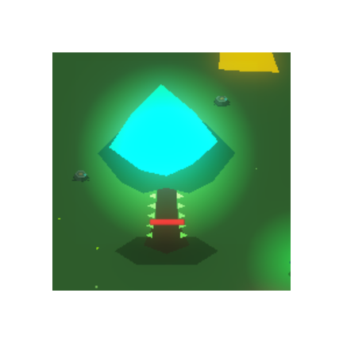
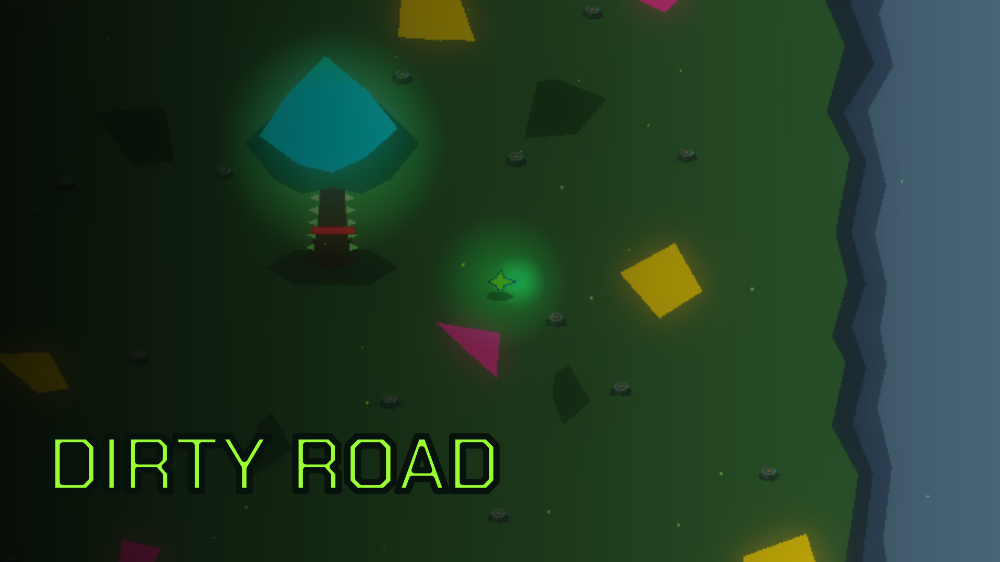
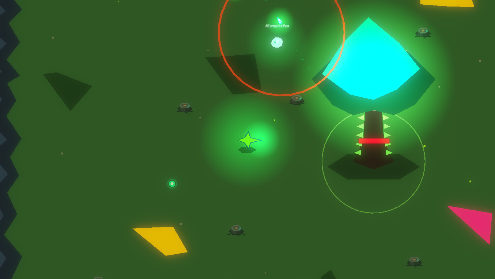
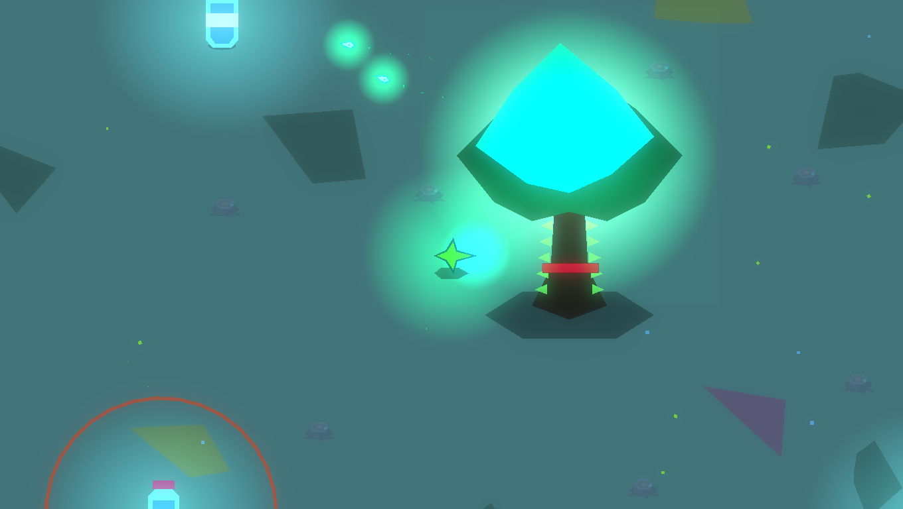
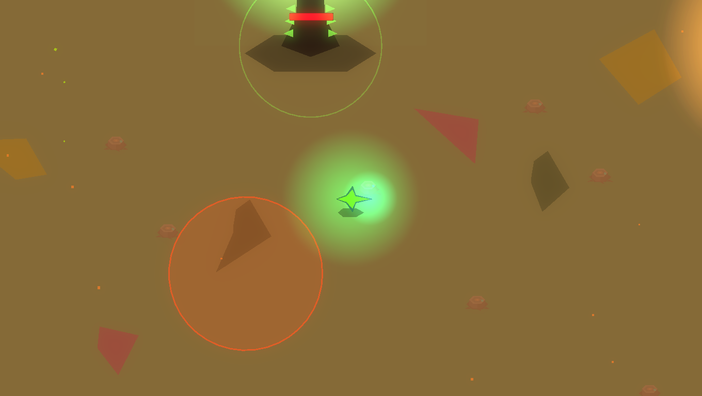
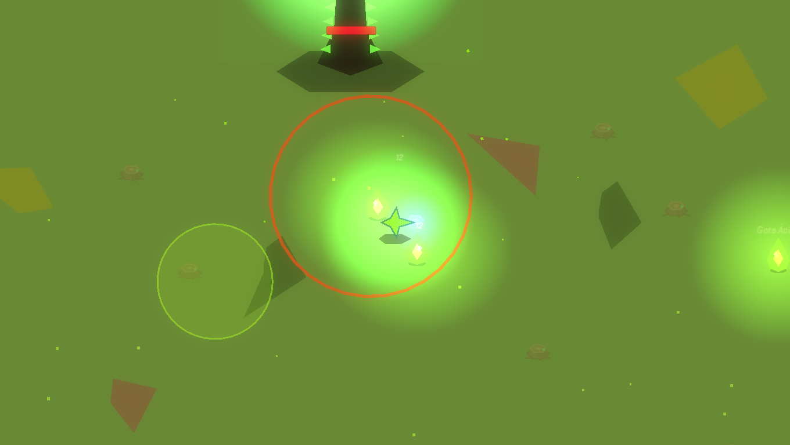
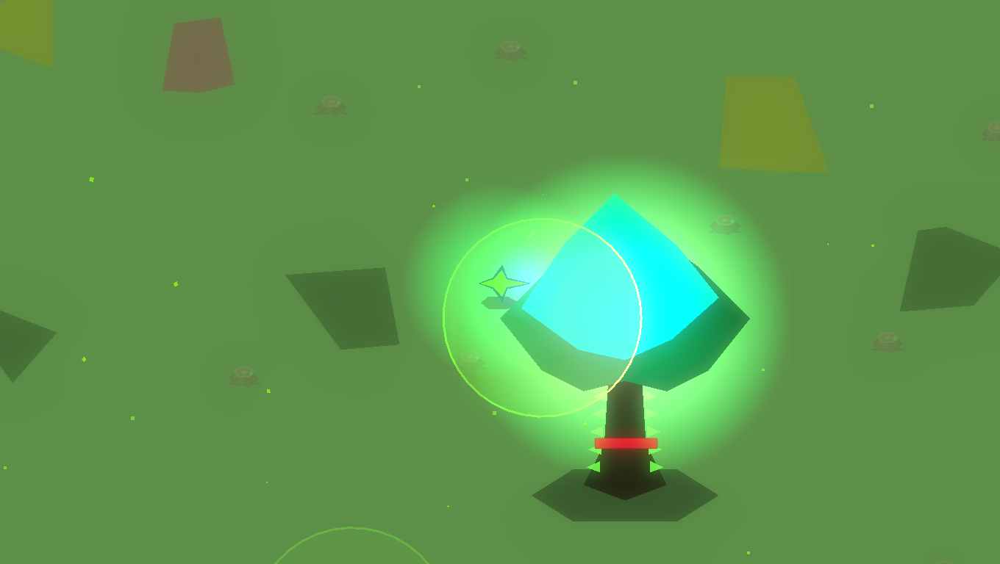
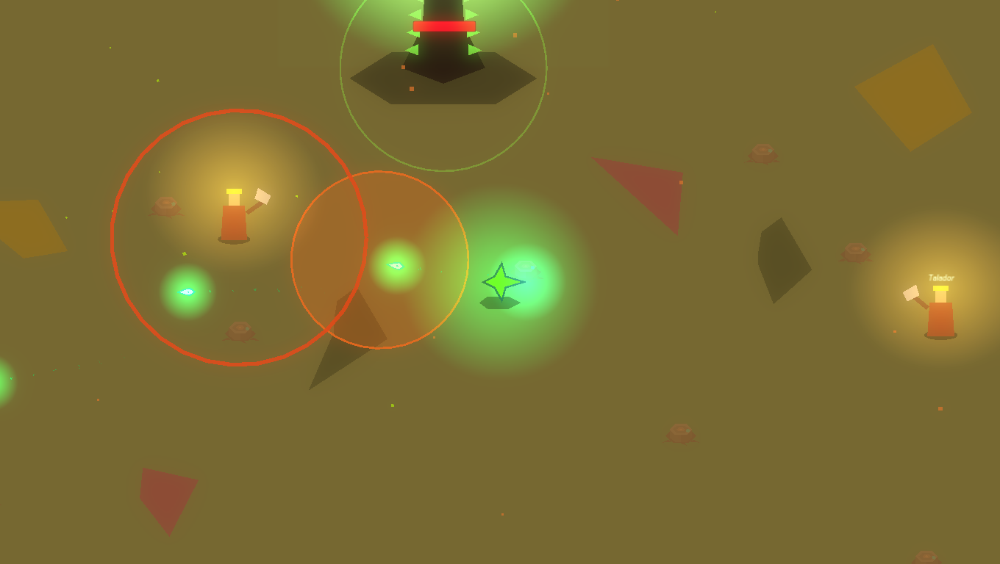
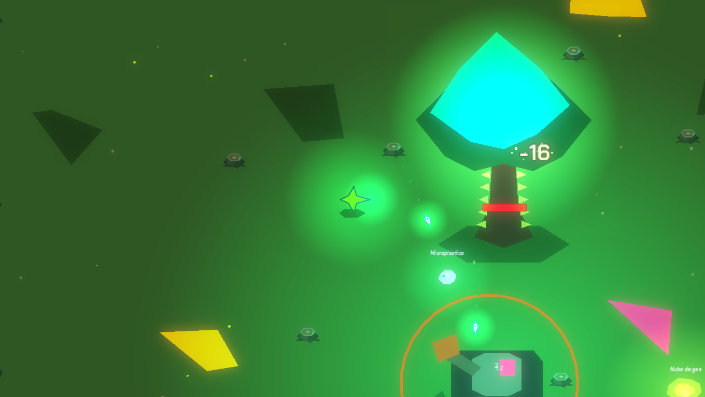

Dirty RoadDirtyRoad
Survival action 2D infinito · educativo · ambiental
No hay final. No hay pantalla de victoria.
No hay «jefe final de la contaminación».
01 ¿Qué es Dirty Road?
Un survival action top-down en 2D donde el jugador defiende un Árbol vivo —último símbolo de un ecosistema sano— frente a oleadas interminables de enemigos que representan problemas ambientales reales.
La travesía sigue a Renata y al nodo jugable Quark por un valle que cambia de piel en cada etapa: mismo terreno, nueva amenaza, nueva lección.
02 Un problema que no se derrota
La contaminación no es un monstruo con barra de vida final: es sistémica y cíclica, como en la realidad. Por eso el juego no termina. La única meta posible es gestionarla, ralentizarla y mantener vivo el ecosistema el mayor tiempo posible.
La partida no se mide en victoria, sino en tiempo: oleada, etapa, biomasa y segundos de ecosistema en pie.
Cada enemigo y cada jefe es un problema ambiental con forma —microplástico, humo de fábrica, red fantasma, radiación, pesticidas—. Aprender a leerlos es aprender a leer el mundo.


Etapa 1 · Suelo y aire

Etapa 3 · Océanos

Etapa 10 · Clima

Etapa 5 · Lluvia ácida

Etapa 7 · Nuclear

Etapa 9 · Deforestación

Aprender jugando, no leyendo
Cada dato llega por feedback de combate y popups cortos, nunca bloqueantes (≤ 3–4 s).
Infinito, no repetitivo
El mundo evoluciona para que la hora 3 se sienta distinta de la hora 1.
Habilidad sobre grind
Progresión por maestría —timing de dash, posición, combos—, no por inflar números.
Cada enemigo enseña algo
Ningún monstruo genérico: cada enemigo y jefe mapea 1:1 a un problema real.
El mundo reacciona a ti
Paleta, partículas y sonido forman un panel vivo del estado del ecosistema.
03 El ciclo de juego
El núcleo es un loop de defensa por bloques que escala sin terminar. Sobrevives una oleada cronometrada: los enemigos aparecen de forma continua mientras corre el reloj. Matarlos no adelanta la oleada —el reloj manda—, así que sobrevivir y proteger el Árbol importan tanto como eliminar.
Al cerrar la oleada llega un descanso breve y la opción de comprar mejoras con biomasa. Cada oleada dentro de la etapa es más larga y densa; la décima es de jefe, sin reloj: solo termina cuando el jefe cae.
Al acabar la etapa el juego no avanza solo: espera a que cruces la puerta y vuelve a empezar con el mismo valle, otra piel y enemigos heredados de etapas anteriores.
04 Aprender jugando
El sistema educativo es un pilar, no un extra. Se apoya en la Teoría del Aprendizaje Significativo y en la gamificación para entregar cada dato dentro de la acción: cartas de enemigo al primer encuentro, mensajes de descanso, de muerte y datos de supervivencia.
Todo es breve y ajustable —escala, posición, duración y sonido— para no interrumpir jamás. Y el mundo mismo enseña: su paleta, partículas y audio son un panel vivo del estado del ecosistema.
05 Mecánicas clave
Combate a distancia
Ataque automático con apuntado manual o segundo joystick; dash con invulnerabilidad.
Biomasa
Moneda sin tope: los enemigos sueltan orbes. El súper cuesta 10.
Cartas acumulables
Mejoras por rareza que reaplican su efecto en cada compra.
Jefes con identidad
Uno por etapa, con patrones y proyectiles propios.
Controles táctiles
Doble joystick virtual y botones para Android; también teclado y ratón.